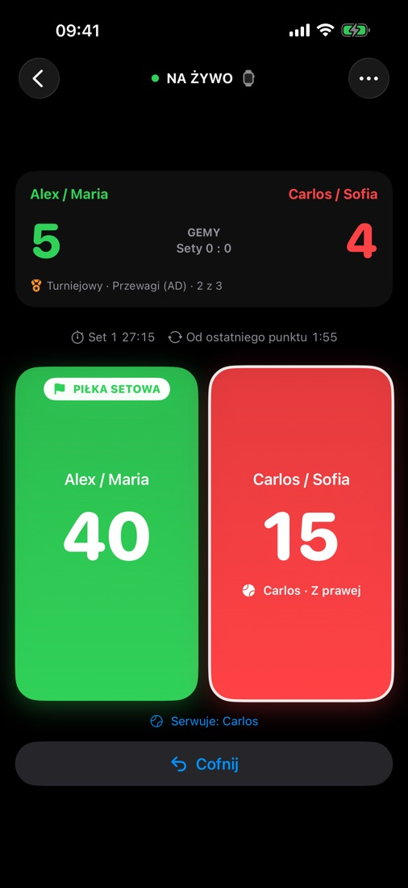
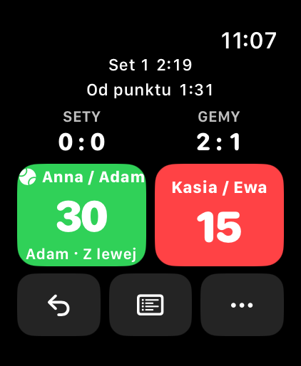
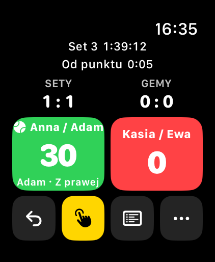
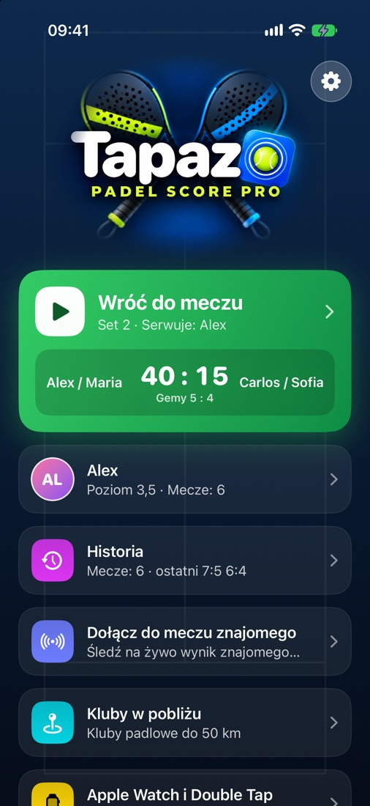
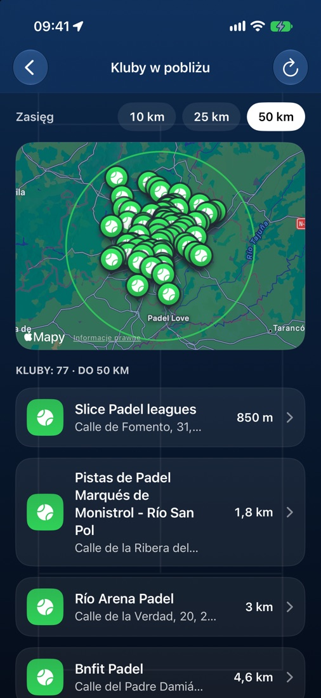
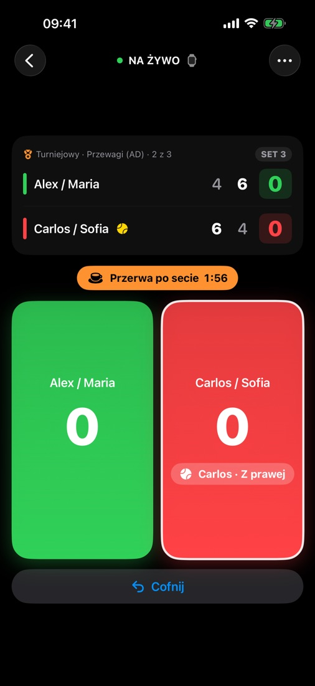
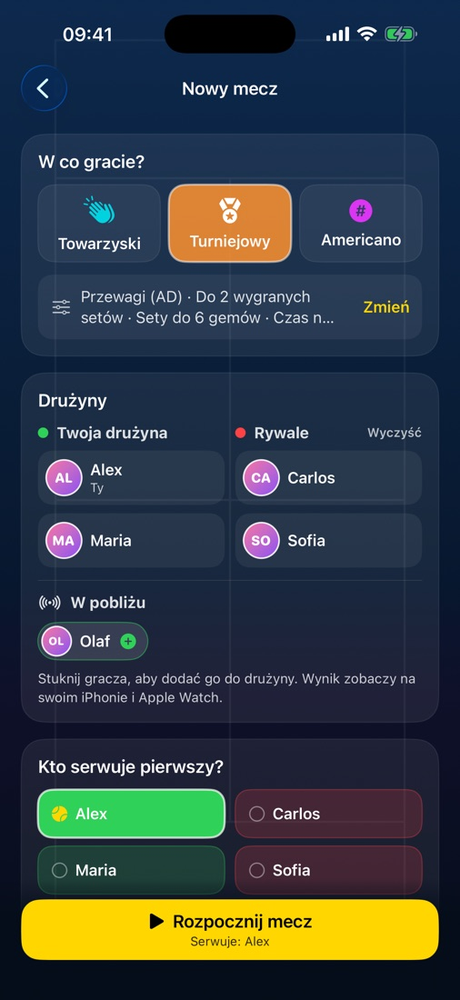
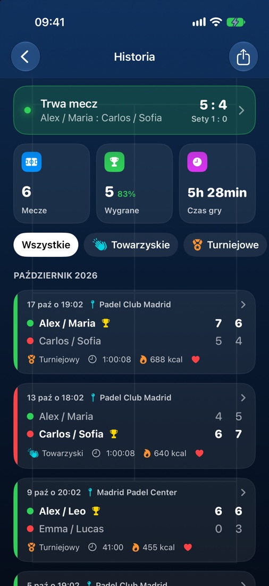
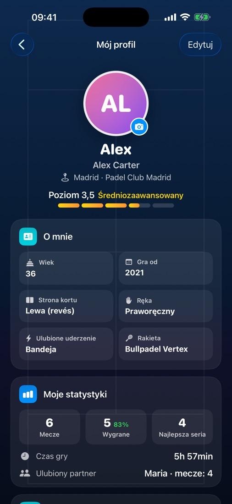
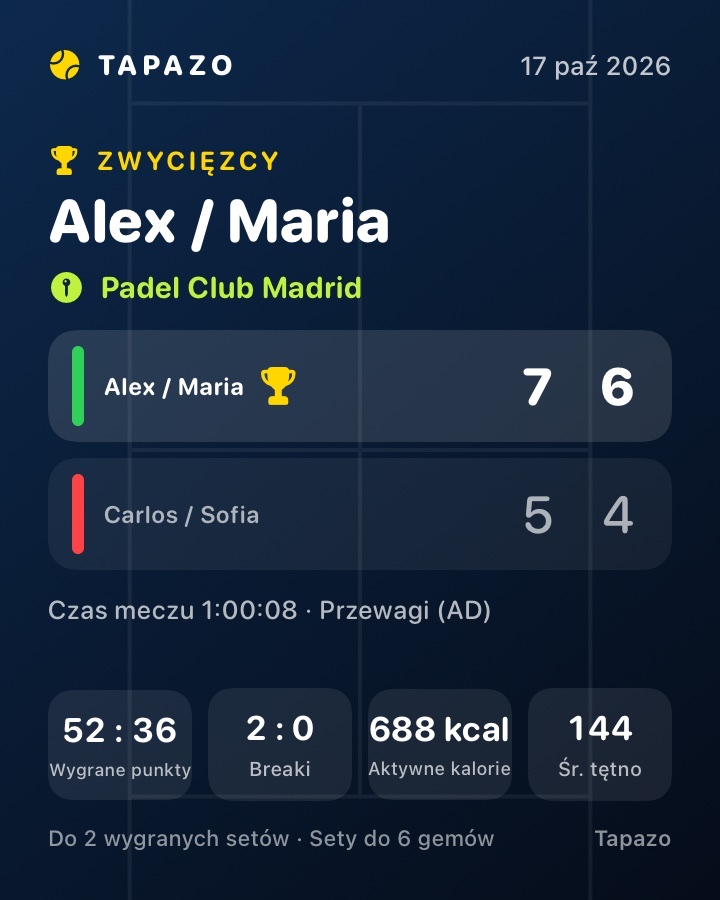

Licz wynik padla bez odrywania się od gry.Keep padel score without leaving the game.Lleva el marcador de pádel sin dejar de jugar.
Punkt to jedno stuknięcie albo gest dłonią. Gemy, sety, tie-breaki i serwis liczą się same.A point is one tap or a hand gesture. Games, sets, tie-breaks and serve are counted for you.Un punto es un toque o un gesto con la mano. Juegos, sets, tie-breaks y saque se cuentan solos.
Działa bez internetuWorks offlineFunciona sin internet
8 języków8 languages8 idiomas
Wymaga iPhone'a z iOS 26.5 i Apple Watch z watchOS 26.5 lub nowszym.Requires iPhone with iOS 26.5 and Apple Watch with watchOS 26.5 or later.Requiere un iPhone con iOS 26.5 y un Apple Watch con watchOS 26.5 o posterior.


FunkcjeFeaturesFunciones
Wszystko, czego potrzebujesz na korcieEverything you need on courtTodo lo que necesitas en la pista
Stworzone dla padla, nie przerobione z tenisa.Built for padel, not adapted from tennis.Hecha para el pádel, no adaptada del tenis.
Jedno stuknięcie na punktOne tap per pointUn toque por punto
Duże przyciski drużyn na zegarku, gest Double Tap bez dotykania ekranu, a na Apple Watch Ultra przycisk Czynności. Pomyłkę cofasz jednym przyciskiem.Big team buttons on your watch, Double Tap without touching the screen, and the Action button on Apple Watch Ultra. Undo any mistake with one button.Botones grandes de cada equipo en el reloj, el doble toque sin tocar la pantalla y el botón de acción en el Apple Watch Ultra. Deshaz cualquier error con un botón.
Kto serwuje i skądWho serves, and from whereQuién saca y desde dónde
Przed meczem wybierasz, kto serwuje, także jednym stuknięciem w „Kto serwuje?” na zegarku. Potem aplikacja sama pilnuje rotacji serwisu, imion graczy i strony serwisu.Pick who serves before the match, also with one tap on "Who serves?" on the watch. The app then follows the serve rotation, player names and serving side for you.Elige quién saca antes del partido, también con un toque en «¿Quién saca?» en el reloj. La app sigue por ti la rotación del saque, los nombres de los jugadores y el lado de saque.
Mecz towarzyski lub turniejowyFriendly or tournament matchPartido amistoso o de torneo
Towarzyski: zmiana stron po secie. Turniejowy: po nieparzystych gemach, jak w przepisach. Do tego opcjonalne odliczanie czasu na zmianę stron: 90, 120 lub 180 s.Friendly: change ends after each set. Tournament: after odd games, as in the rules. Plus an optional change of ends timer: 90, 120 or 180 s.Amistoso: cambio de lado tras cada set. Torneo: tras los juegos impares, como dice el reglamento. Además, un temporizador opcional para el cambio de lado: 90, 120 o 180 s.
Americano
Liczenie punktów do 16, 21, 24, 32 albo własnej sumy. Serwis zmienia się co ustaloną liczbę punktów, a aplikacja pokazuje, kto serwuje.Points up to 16, 21, 24, 32 or your own total. The serve changes every set number of points, and the app shows who serves.Puntos hasta 16, 21, 24, 32 o el total que quieras. El saque cambia cada cierto número de puntos y la app muestra quién saca.
Mecz ze znajomymi w pobliżuPlay with friends nearbyJuega con amigos cercanos
Znajomi z Tapazo na korcie pojawiają się na ekranie „Nowy mecz”. Dodaj ich do drużyny, a wynik zobaczą na swoim iPhonie i zegarku. Mecz trafi też do ich historii. Bez internetu.Friends with Tapazo on court appear on the New match screen. Add them to a team and they see the score on their iPhone and watch. The match goes into their history too. No internet needed.Los amigos con Tapazo en la pista aparecen en la pantalla Nuevo partido. Añádelos a un equipo y verán el marcador en su iPhone y su reloj. El partido también se guarda en su historial. Sin internet.
Kluby padlowe w pobliżuPadel clubs nearbyClubes de pádel cercanos
Mapa i lista klubów do 10, 25 lub 50 km z Apple Maps, z dojazdem, telefonem i stroną klubu. Klub zapisuje się z meczem i trafia na grafikę z wynikiem.A map and list of clubs within 10, 25 or 50 km from Apple Maps, with directions, phone and website. The club is saved with the match and shown on the result image.Mapa y lista de clubes a 10, 25 o 50 km desde Apple Maps, con cómo llegar, teléfono y web. El club se guarda con el partido y aparece en la imagen del resultado.
Wynik na głosScore called out loudMarcador en voz alta
Po każdym punkcie aplikacja ogłasza wynik jak sędzia: przez głośnik iPhone'a dla całej czwórki albo w słuchawkach.After every point the app calls the score like an umpire: on the iPhone speaker for all four players, or in your headphones.Tras cada punto, la app canta el marcador como un árbitro: por el altavoz del iPhone para los cuatro o en tus auriculares.
Tablica przy korcieCourtside scoreboardMarcador a pie de pista
Obróć iPhone'a poziomo, a zamieni się w tablicę z wielkimi cyframi, czytelną dla wszystkich graczy. Strony zamienisz jak na korcie.Turn your iPhone sideways for a scoreboard with huge numbers that every player can read. Swap sides to match the court.Gira el iPhone en horizontal y se convierte en un marcador con números enormes que todos pueden leer. Cambia los lados como en la pista.
Profil graczaPlayer profilePerfil de jugador
Zdjęcie, nick, poziom 0–5 i styl gry. Statystyki, odznaki, ulubiony partner i bilans z każdym, z kim grasz.Photo, nickname, level 0–5 and playing style. Statistics, achievements, your favorite partner and your record with everyone you play.Foto, apodo, nivel 0–5 y estilo de juego. Estadísticas, logros, tu compañero favorito y tu balance con cada jugador.
Break point i piłka meczowaBreak point and match pointBola de break y de partido
Aplikacja podpowiada break pointy, piłki setowe i meczowe na iPhonie, zegarku i ekranie blokady.Break points, set points and match points are shown on iPhone, Apple Watch and the Lock Screen.Las bolas de break, de set y de partido aparecen en el iPhone, el Apple Watch y la pantalla de bloqueo.
Twój format meczuYour match formatTu formato de partido
Przewagi, Golden Point lub Star Point (FIP 2026). 1, 3 lub 5 setów, krótkie sety i super tie-break.Advantage, Golden Point or Star Point (FIP 2026). 1, 3 or 5 sets, short sets and super tie-break.Ventaja, Punto de oro o Star Point (FIP 2026). 1, 3 o 5 sets, sets cortos y súper tie-break.
Twoje koloryYour colorsTus colores
Dziesięć kolorów przycisków osobno dla każdej drużyny, gotowe zestawy i podgląd na żywo. Kolory przechodzą na zegarek.Ten button colors for each team, ready-made sets and a live preview. Colors carry over to the watch.Diez colores de botón para cada equipo, combinaciones listas y vista previa en directo. Los colores pasan al reloj.
Statystyki i historiaStatistics and historyEstadísticas e historial
Breaki, serie i wykres przebiegu meczu. Historia z podsumowaniem, filtrem i eksportem do Excela lub Numbers.Breaks, streaks and a match flow chart. A history with a summary, filter and export to Excel or Numbers.Breaks, rachas y gráfico del partido. Historial con resumen, filtro y exportación a Excel o Numbers.
Wynik zawsze na widokuThe score always in sightEl marcador siempre a la vista
Ekran blokady i Dynamic Island na iPhonie, wynik na tarczy zegarka. Zegarek i telefon zawsze pokazują to samo.Lock Screen and Dynamic Island on iPhone, and the score on your watch face. Watch and phone always show the same score.Pantalla de bloqueo y Dynamic Island en el iPhone, y el marcador en la esfera del reloj. El reloj y el teléfono muestran siempre lo mismo.
Trening w aplikacji ZdrowieWorkout in Apple HealthEntrenamiento en Salud
Zegarek zapisuje mecz jako trening w aplikacji Zdrowie, a tętno i kalorie pokazuje w historii. Przełącznik „Zapisuj mecze w Zdrowiu” w ustawieniach.The watch saves the match as a workout in the Health app, with heart rate and calories in your history. Turn it on or off with "Save matches in Health".El reloj guarda el partido como entrenamiento en la app Salud, con frecuencia cardiaca y calorías en tu historial. Actívalo o desactívalo con «Guardar partidos en Salud».
Double Tap
Graj z rakietą w dłoni. Licz punkty gestem.Keep the racket in your hand. Score with a gesture.No sueltes la pala. Marca con un gesto.
Stuknij palcem wskazującym o kciuk dłoni z zegarkiem. Nie musisz dotykać ekranu ani na niego patrzeć.Tap your index finger and thumb together on the hand with the watch. No need to touch or even look at the screen.Junta dos veces el índice y el pulgar de la mano del reloj. No hace falta tocar ni mirar la pantalla.
1×Punkt dla Twojej drużynyPoint for your teamPunto para tu equipoJeden gest Double Tap.One Double Tap.Un doble toque.
2×Punkt dla rywaliPoint for the opponentsPunto para los rivalesDwa gesty pod rząd.Two gestures in a row.Dos gestos seguidos.
Różne wibracje potwierdzają, komu przybył punkt. Czas na drugi gest ustawisz w menu zegarka. Wymaga Apple Watch Series 9 lub Ultra 2 albo nowszego.Distinct haptics confirm who got the point. Set the time for the second gesture in the watch menu. Requires Apple Watch Series 9 or Ultra 2 or later.Vibraciones distintas confirman quién ganó el punto. Ajusta el tiempo del segundo gesto en el menú del reloj. Requiere Apple Watch Series 9 o Ultra 2 o posterior.
Gotowy na gestReady for a gestureListo para el gesto

Czeka na drugi gestWaiting for a second gestureEsperando un segundo gesto
Formaty i zasadyFormats and rulesFormatos y reglas
Gracie po swojemuPlay your wayJuega a tu manera
Od towarzyskiego meczu, przez Americano, po turniejowe zasady FIP.From a friendly match, through Americano, to FIP tournament rules.Desde un partido amistoso, pasando por el Americano, hasta las reglas de torneo FIP.
Mecz towarzyskiFriendly matchPartido amistoso
Mecz turniejowyTournament matchPartido de torneo
Americano 16 · 21 · 24 · 32
Przewagi (AD)Advantage (AD)Ventaja (AD)
Golden Point
Star Point FIP 2026
1, 3 lub 5 setów1, 3 or 5 sets1, 3 o 5 sets
Krótkie sety do 4Short sets to 4Sets cortos a 4
Super tie-break do 10Super tie-break to 10Súper tie-break a 10
Tie-break przy 6:6Tie-break at 6:6Tie-break con 6:6
Rotacja serwisuServe rotationRotación del saque
Zmiana stronChange of endsCambio de lado
Czas na zmianę stron: 90, 120, 180 sChange of ends timer: 90, 120, 180 sTemporizador de cambio de lado: 90, 120, 180 s
Break point i piłka meczowaBreak and match pointsBolas de break y de partido
Zobacz aplikacjęTake a lookÉchale un vistazo
Od pierwszego punktu do udostępnienia wynikuFrom the first point to sharing the resultDel primer punto a compartir el resultado

StartStartInicioMecz, profil, historia i klubyMatch, profile, history and clubsPartido, perfil, historial y clubesMeczMatchPartidoWynik, serwis i piłka setowaScore, serve and set pointMarcador, saque y bola de set

KlubyClubsClubesKluby padlowe w pobliżu na mapiePadel clubs nearby on a mapClubes de pádel cercanos en un mapa

Zmiana stronChange endsCambio de ladoSety jak w telewizji i odliczanie przerwySets like on TV and a break countdownSets como en la tele y cuenta atrás

Nowy meczNew matchNuevo partidoDrużyny, gracze w pobliżu i serwisTeams, players nearby and serveEquipos, jugadores cercanos y saque

HistoriaHistoryHistorialKluby, kalorie, filtr i eksportClubs, calories, filter and exportClubes, calorías, filtro y exportación

ProfilProfilePerfilPoziom, styl gry i statystykiLevel, playing style and statisticsNivel, estilo de juego y estadísticas

UdostępnijShareCompartirGrafika z klubem na Instagram i WhatsAppAn image with the club for Instagram and WhatsAppUna imagen con el club para Instagram y WhatsApp
Jak to działaHow it worksCómo funciona
Trzy kroki do meczuThree steps to your matchTres pasos para tu partido
Ustaw meczSet up the matchPrepara el partido
Wybierz mecz towarzyski, turniejowy lub Americano. Dodaj graczy: wpisz imiona albo dodaj znajomych z Tapazo w pobliżu. Aplikacja podpowie klub, w którym grasz.Choose a friendly, tournament or Americano match. Add players: type their names or add friends with Tapazo nearby. The app suggests the club you are at.Elige partido amistoso, de torneo o Americano. Añade jugadores: escribe sus nombres o añade amigos cercanos con Tapazo. La app te sugiere el club en el que estás.
Graj z zegarkiemPlay with your watchJuega con tu reloj
Po każdej wymianie stuknij drużynę albo użyj gestu Double Tap. iPhone może zostać w torbie.After each rally, tap the team or use Double Tap. Your iPhone can stay in your bag.Tras cada punto, toca el equipo o usa el doble toque. Tu iPhone puede quedarse en la bolsa.
Sprawdź i udostępnijReview and shareRevisa y comparte
Po meczu zobacz statystyki, a wynik zostaje w Historii. Wyślij znajomym grafikę z wynikiem.After the match, see the statistics; the result stays in your History. Send the result image to your friends.Después del partido, mira las estadísticas; el resultado queda en tu historial. Envía la imagen del resultado a tus amigos.
Twoje dane zostają u CiebieYour data stays with youTus datos se quedan contigo
Bez konta, bez serwerów, bez reklam i bez śledzenia. Tapazo nie zbiera żadnych danych, a Twój profil i zdjęcie zostają na Twoim iPhonie. Lokalizacja służy tylko do wyszukania klubów i nie jest zapisywana.No account, no servers, no ads and no tracking. Tapazo does not collect any data; your profile and photo stay on your iPhone. Your location is used only to find clubs and is not saved.Sin cuenta, sin servidores, sin anuncios y sin seguimiento. Tapazo no recopila ningún dato; tu perfil y tu foto se quedan en tu iPhone. La ubicación solo se usa para buscar clubes y no se guarda.